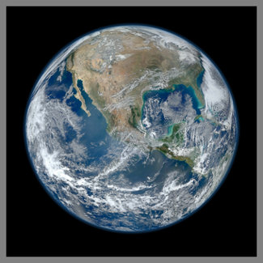

Jan 22 2019
Good Leadership
He is Chairman of Kakuma, Agood leader has afuturistic vision and knows how to turn his ideas into real-world success stories.
Mohammed Hassan Mohamud says his mother died in Kakuma refugee camp 15 months ago and asks, 'Will I also die in that camp?' He says: "As you attend meetings in the next few days, think of those of us on sidelines watching in, we’re just looking for a place to call home." #wef19
Jan 22, 2019 ... Somalian refugee Mohammed Hassan Mohamud said his people were on the side-lines of the debate over the future of the world economy.
says: 40 million in US facing hunger, 1 in 6 children do not have the food they need to survive. 40% of food we produce goes to waste. We need to drive a more sustainable and equitable global architecture so everyone has the food they need #wef19
December 18 2018
Pictures of the planet

Pictures of the planet taken from space are of considerable importance; for example, they are an enormous help in weather prediction and especially in tracking and predicting hurricanes. And they are extraordinarily beautiful.
Planets are among the many worlds and smaller objects that orbit the Sun. The formal definition of planet, as voted on by the International Astronomical Union in 2006, is as follows:
A planet is a celestial body that
(a) is in orbit around the Sun,
(b) has sufficient mass for its self-gravity to overcome rigid body forces so that it assumes a hydrostatic equilibrium (nearly round) shape, and
(c) has cleared the neighbourhood around its orbit.
Under this definition, Pluto is NOT a planet, but has been deemed a dwarf planet because it has not yet cleared its orbit. This definition is under discussion, particularly by members of the planetary science community, and it may yet be further refined.
Under this definition, Pluto is NOT a planet, but has been deemed a dwarf planet because it has not yet cleared its orbit. This definition is under discussion, particularly by members of the planetary science community, and it may yet be further refined.
.jpg)